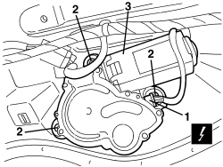
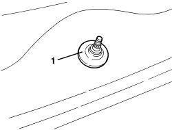

5050C42 REAR WIPER MOTOR - R+R
- Path
- Procedures > 50 AUXILIARY UNITS > 5050 SCREEN WASHERS AND HEADLAMP WASH/WIPE > 5050C REARSCREEN WASH/WIPE > 5050C42 REAR WIPER MOTOR - R+R
- Kind
- repair procedure (removal / refitting; the operation number is the code)
- Applies to
- all engines; all production periods
- Interactive page
- https://sloeber94.github.io/elrnDB/alfa/159/en/#/939005343
Applies to: all engines; all production periods
 Removing
Removing
 Refitting
RefittingOp. 7040G36 BULB HOLDER FOR LOAD CARRYING COMPARTMENT lighting on tailgate - R.R.
Op. 5050C34 REAR WIPER ARM WITH BLADE - R+R
Op. 7015A05 TAILGATE LOWER INTERIOR PANEL-R R
1. Disconnect the electrical connection for the rear windscreen wiper motor.
Description | Component |
|---|---|
REAR WIPER MOTOR |
2. Undo the bolts.
3. Remove the rear windscreen wiper motor.

Applies to: all engines; all production periods
1. If necessary, working from the outside of the rearscreen, remove the seal for the opening for the glass and check that it is intact.

Applies to: all engines; all production periods
Refitting
Removing- Check that the rear windscreen wiper motor is not damaged and, if necessary, conduct an electrical test.
- If removed, position the seal on the glass opening.
- Position the rear windscreen motor and secure it using the bolts.
- Connect the electrical connection for the rear windscreen wiper motor.
Op. 7015A05 TAILGATE LOWER INTERIOR PANEL-R R
Op. 5050C34 REAR WIPER ARM WITH BLADE - R+R
Op. 7040G36 BULB HOLDER FOR LOAD CARRYING COMPARTMENT lighting on tailgate - R.R.
Topics linked from this page (4)
- 5050C34 REAR WIPER ARM WITH BLADE - R+R
- 7015A05 TAILGATE LOWER INTERIOR PANEL-R R
- 7040G36 BULB HOLDER FOR LOAD CARRYING COMPARTMENT lighting on tailgate - R.R.
- N016 REAR WINDOW WIPER MOTOR